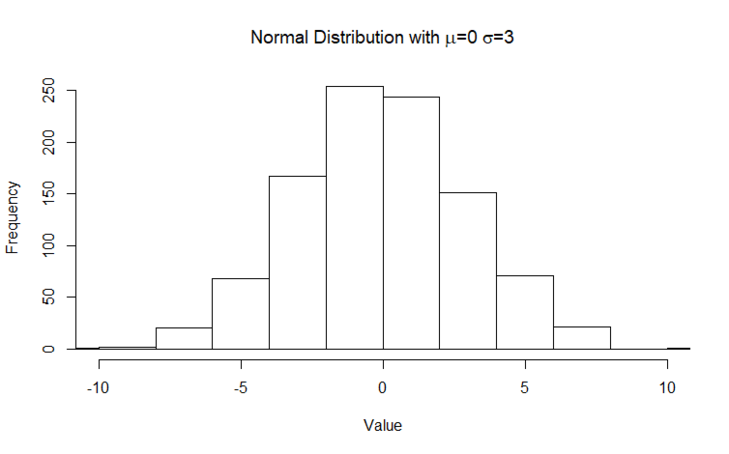

When plotting data, some datasets are more clumped up together whilst others appear much more spread out.
The standard deviation is a single number that allows us to discern how spread out our data is. The variance and standard deviation are technically not aggregation functions as they do not satisfy the boundary properties. However they do share the same feature in that they take in a set of data and use a single value to express a feature of that data.
The higher the standard deviation, the higher the spread. Consider the two following histograms:

We can see the first histogram represents data that are more tightly clumped up towards the middle, whereas the second histogram is a bit more spread out. The first histogram therefore has a smaller standard deviation than the second histogram.
Mathematically, given a set of values the (population) standard deviation () is
where
If we are to manually calculate the standard deviation of a set of numbers .
Note: Variance is not explicitly addressed it does not have as much relevance to the content in these weeks. The scenarios in which one would address/use the variance is different to the scenarios where we’d prefer the standard deviation.
In addition to this, there is a distinction to be made between population standard deviation and sample standard deviation, where in most scenarios we’re taking a sample from a population. The formula is slightly different, where we divide by instead of since it is mathematically proven to give a better estimate.
We won’t investigate the details, but point out that the built in standard deviation sd() function in R uses this formula. To test against our earlier example, sd(c(1,4,7,12)) should give approximately .
Do some independent research to find a histogram that can be cross sectioned a number of ways to express more tightly clumped data towards the middle. For example, a histogram taken from blood type data may be expressed differently when age, weight or date is used to represent the data.
Consider your example in terms of the way that viewing multiple histograms of the same data can add to the conclusion you initially made about the data depending upon the selected distributions.
Share your thoughts and engage with others in the discussion forum.